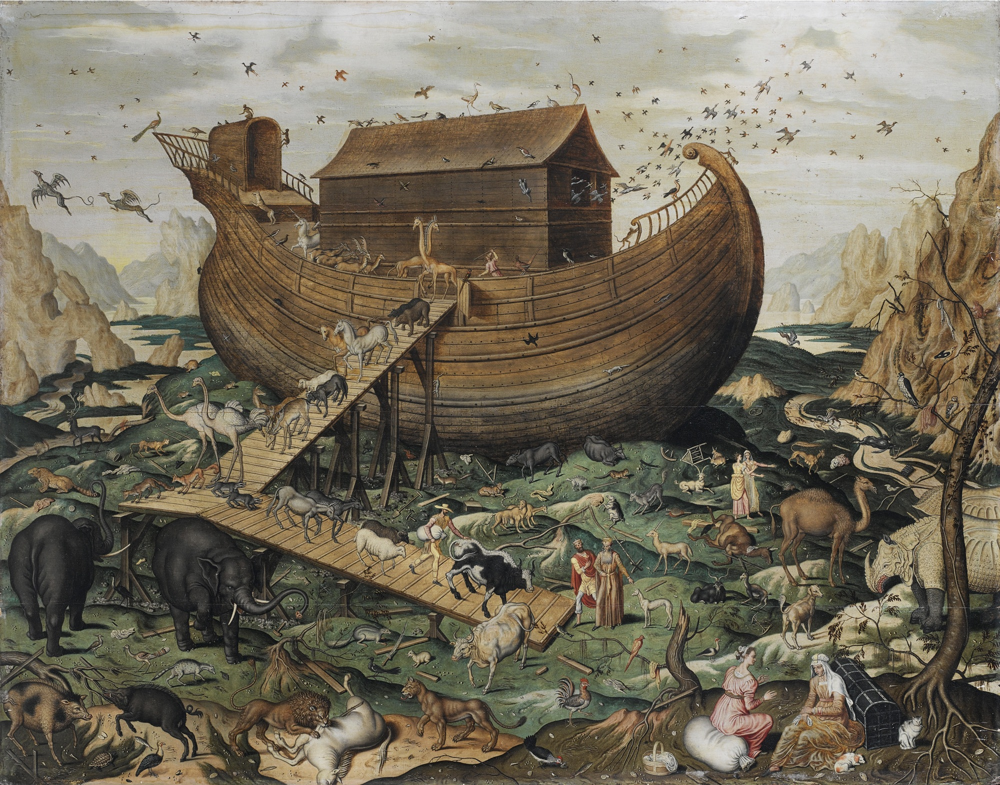
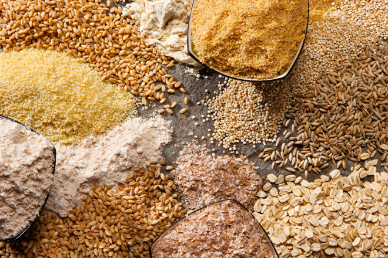

From Sacrifice to Ethics: Meat in the Vedas, Bible, and Qur’an
📖
Note: This article is intended for reflection and sharing knowledge. It is not written for
debate, but for thoughtful exchange of perspectives.
Vedic tradition
When we look into the Vedic tradition, the picture of meat consumption is very different from the way we
understand food today. The Vedas do not encourage ordinary meat eating as a regular diet. Instead, any
reference to animal killing is almost always tied to yajña (sacrifice) — a ritual act performed
for the gods.
- No casual meat eating in the Vedas
- There is no instruction in the Vedas that people may kill animals freely for food.
- Meat appears only in the sacrificial context, where it was considered an offering to the
deities, not a daily meal for humans.
- Animal sacrifice was highly regulated
- Certain animals (like goats, horses, and bulls) are mentioned, but the selection was not
random. In some hymns, the requirement is that the animal be one’s own cherished animal — a
pet-like goat or cow raised with care.
- This indicates that sacrifice was not simply about food, but about giving up something
precious in devotion.
- From offering to prasādam
- After sacrifice, the offering (including meat) was seen as prasāda, sacred remnants
of the ritual. It was not regarded as ordinary food or indulgence, but as sanctified
substance distributed as part of worship.
- Transition in the Purāṇas and later literature
- With the rise of devotional (bhakti) movements and ethical discourses, meat eating
began to be openly condemned.
- The Purāṇas, Dharmaśāstras, and Smṛti texts increasingly associated ahimsā
(non-violence) with dharma, stressing vegetarianism as the higher ideal.
- By this time, animal sacrifice itself was gradually replaced with symbolic offerings (like
grains, fruits, or coconuts).
Frequency of Sacrifices in the Vedic Period
The frequency of sacrifices in the Vedic period depended on the type of ritual, the deity, and the social
status of the sacrificer. Here’s a detailed breakdown:
- Daily / Regular Sacrifices (Nitya Yajñas)
- Certain offerings were routine, performed daily by householders or priests:
- Agnihotra: A small fire offering performed twice daily — at sunrise
and sunset.
- Darśa-Pūrṇamāsa Yajña: Monthly offerings on the new moon and full
moon.
- These were small-scale sacrifices, often involving grains, milk, ghee, and occasionally a
small animal (like a goat) depending on regional/priestly traditions.
- Purpose: Maintain cosmic order, honor Agni (fire god), and sustain family &
society.
- Seasonal or Special Sacrifices
- Performed at specific times of the year:
- Vājapeya: For kings to gain prosperity and fame.
- Somayajña / Soma sacrifice: During Soma harvesting season, complex
multi-day ritual.
- Aśvamedha (Horse sacrifice): Rare, once in a king’s lifetime or
when special political/social status needed affirmation.
- Duration varied: from 3 days to 12 days or more, depending on the ritual.
- Occasional or Life-Event Sacrifices
- Linked to important life events: birth, marriage, death, or royal ceremonies.
- Sometimes involved animal sacrifice, but again, carefully selected and mostly symbolic.
Frequency Summary
| Type of Sacrifice |
Frequency |
Typical Offering |
| Agnihotra |
Twice daily |
Milk, ghee, grains; sometimes small goat |
| Darśa-Pūrṇamāsa |
2 times/month |
Grains, ghee, milk |
| Soma sacrifice |
Seasonal |
Soma plant, grains, ghee, sometimes animals |
| Royal sacrifices (Aśvamedha) |
Rare |
Horse, other large animals, elaborate ritual |
| Life-event rituals |
As needed |
Animal or symbolic offerings |
✅ Key Takeaways
- Daily sacrifices were the norm; animal sacrifices were rare and mostly in large, special yajñas.
- The majority of Vedic rituals involved milk, ghee, grains, and fire offerings, not routine meat
consumption.
- Sacrifice was more about devotion and cosmic order than regular food.
Signs of Ordinary Slaughter in Vedas
Slaughter for private eating outside yajña was not sanctioned. Let's go into detail for this
topic.
- Meat in the Vedas is tied to Sacrifice
- The Rigveda and Yajurveda describe eating meat only in yajña (sacrifice).
- Example: In the Aśvamedha yajña (Rigveda 1.162–163), the horse was
ritually killed, cooked, and distributed.
- The Śatapatha Brāhmaṇa says that participants (priests, sacrificer, invited guests) ate the
consecrated meat.
👉 Outside sacrifice, there is no encouragement of killing animals for casual eating.
- Technical restriction
- Meat was sacred food (prasāda of yajña), not everyday food.
- Atharvaveda 9.6.23 speaks of “yajña-food” from cattle, but again in a sacrificial
frame.
- Nowhere in the Saṁhitās is there a hymn praising “hunting or slaughtering for taste.”
- Indications against ordinary slaughter
- Rigveda 10.87.16 condemns those who “cook the cow that gives milk” — showing disapproval of
killing useful animals outside ritual.
- The word Aghnyā (not-to-be-killed) is repeatedly used for cows.
- Many hymns equate cow-killers (goghna) with sinners.
- What later ritual texts clarify
- Brāhmaṇas and Dharma texts allowed meat if ritually consecrated, but condemned casual
slaughter.
- Manu Smṛti later says: “Meat is permitted in sacrifice, never for taste.”
✅ Conclusion (Vedic Position):
- Yes, animals were killed in Vedic times — but almost always within the ritual context of
yajña.
- No, slaughter for private eating outside yajña was not sanctioned.
- Killing without ritual sanctity was considered sinful, especially cows.
Sources

- Hymns praising the Cow (gau, aghnyā, mother)
- Rigveda 1.164.27: “The cow is Aghnyā (not to be slain). She yields milk,
the sustenance of all beings.”
- Rigveda 6.28.1–8: A full hymn glorifying cows as givers of milk, wealth,
prosperity.
- Rigveda 10.87.16: Protects cows from slaughter.
- Atharvaveda 10.10.29: Describes cow as mother, nourisher of mankind.
- Cows are repeatedly called gau māta, source of ghee for yajñas, and
“treasures of wealth.”
- Hymns mentioning Animal Sacrifice (and meat use)
- Rigveda 1.162: Horse sacrifice (Aśvamedha) described, including
cutting up of the horse.
- Rigveda 1.163: More details of the Aśvamedha.
- Rigveda 10.85.13: Mentions goat as sacrificial animal in the wedding hymn.
- Yajurveda (Taittirīya Saṁhitā 1.1.1): Instructions for animal sacrifice.
- Shatapatha Brāhmaṇa: Elaborates on sacrificing cows, goats, etc., with
rules for distributing the meat.
- Atharvaveda 9.6.23: Refers to “sacrificial food from cattle.”
- The Distribution
- Cow praise hymns: Appear frequently and with deep reverence — especially in
Rigveda Books 6, 10, and Atharvaveda.
- Sacrificial references: Appear in ritual contexts (Rigveda 1.162–163,
10.85, Yajurveda, ritual Brāhmaṇas).
👉 So the distribution is dual:
- Cow: Wealth, mother, inviolable (when praised in hymns to deities, in
prayers, in prosperity context).
- Animal sacrifice: Part of yajña ritual (mainly in technical ritual
hymns).
- Interpretation
- The hymns of praise are emotional, reverential, moral.
- The sacrifice hymns are ritual, procedural.
- That’s why later tradition felt tension: the emotional praise of cows conflicted with the
technical ritual of sacrificing them.
✅ In short:
In the Vedas you will find:
- Dozens of hymns glorifying cows as mothers, wealth, divine beings.
- A smaller but significant set of hymns detailing animal sacrifice (horse, cow, goat, etc.).
Necessity of Meat Eating in the Bible and Qur’an
- Meat Eating in the Bible and Why It Was Necessary

In the Old Testament, the consumption of meat is carefully regulated but clearly permitted.
Initially, in Genesis 1:29–30, God provides humans with plants, fruits, and grains as food. Meat
eating was not part of the original plan. However, after the Flood, God tells Noah:
"Every moving thing that lives shall be food for you. As I gave you the green plants, I give you
everything. But you shall not eat flesh with its lifeblood in it." (Genesis 9:3–4)
This marks the first clear permission to eat meat. But why did God allow this? The reason is
practical necessity. The world after the Flood was harsh; agriculture was limited, and animals
were one of the few reliable sources of protein, fat, and other resources essential for
survival.
Later, the Law of Moses (Leviticus 11, Deuteronomy 14) further codifies which animals are clean
and unclean. Certain species like cows, sheep, goats, and fish with scales are permitted, while
pigs, shellfish, and predatory animals are forbidden. The rules ensure that meat eating is
ethical, regulated, and spiritually mindful — emphasizing that life belongs to God and humans
must not consume it irresponsibly.
In the New Testament, Jesus and his disciples continue to consume meat, but the emphasis shifts
away from ritual slaughter. While dietary laws remain in some Jewish contexts, Christianity
focuses on gratitude, moderation, and ethical consumption, rather than total abstention from
animal products.
- Meat Eating in the Qur’an and Why It Was Necessary
The Qur’an, revealed in 7th century Arabia, similarly permits meat eating but with strict
conditions. Unlike the Vedic culture, the Arabian Peninsula was semi-arid and pastoral, with
limited access to diverse crops. Livestock — sheep, goats, camels, cows — were essential not
just for meat but also for milk, transport, and clothing.
Meat eating in Islam is allowed only when:
- The animal is halāl (lawful), healthy, and treated humanely.
- The animal is slaughtered in the name of God (Bismillāh), draining its blood.
- The act is not wasteful or cruel.
Sacrificial rituals, such as Eid al-Adha, serve both religious and social purposes: they
commemorate Prophet Abraham’s devotion, provide meat to families, and ensure distribution to the
poor. The Qur’an emphasizes that the act is not about the flesh reaching God, but about piety,
gratitude, and moral responsibility (Qur’an 22:36–37).
Thus, like the Bible, the Qur’an permits meat eating as a necessity in survival-oriented
societies, but within ethical, spiritual, and regulated bounds.
- Why the Vedas Advised a Vegetarian Diet, While Others Could Not

The Vedic texts, composed in the Indian subcontinent around 1500–1000 BCE, take a very different
stance. While early Vedas mention meat in the context of ritual sacrifice (yajña), the
texts never promote casual or habitual meat consumption. Cows, goats, and other animals were
offered to the gods in highly regulated rituals, sometimes even requiring that the animal be
one’s own cherished pet, symbolizing devotion and renunciation, rather than appetite.
Several reasons explain why the Vedas could promote vegetarianism while the Bible and Qur’an did
not:
- Environmental abundance: Ancient India had a rich variety of plant-based
foods — grains, legumes, fruits, and dairy — making vegetarianism practically possible.
- Philosophical and ethical emphasis: The Vedas and later Purāṇas highlight
ahiṃsā (non-violence) as a central moral principle. Killing animals for food was
discouraged because all living beings were considered manifestations of the divine.
- Ritual vs. sustenance: Meat was mostly part of sacrificial rituals, not
everyday diet. Over time, symbolic offerings replaced animal sacrifice, reinforcing
compassion and ethical living.
In contrast, the Middle Eastern and Arabian environments were harsher, often dependent on
livestock for survival. There, prohibiting meat entirely could have threatened human sustenance.
Hence, the Bible and Qur’an regulated meat eating ethically, but did not forbid it, focusing
instead on responsibility, gratitude, and mercy.
Conclusion
- Vedas: Meat was allowed only in sacrifice; everyday vegetarianism was ideal, rooted
in non-violence and spiritual purity.
- Bible: Meat permitted due to survival needs, regulated through laws on clean and
unclean animals; focus on obedience and gratitude.
- Qur’an: Meat permitted, especially in pastoral desert contexts, with strict ethical
and ritual rules; focus on piety, mercy, and ethical responsibility.
In essence, all three traditions are concerned with respect for life, but approach it differently:
- Vedas: Non-violence as the primary path.
- Bible & Qur’an: Ethical consumption under divine guidance, allowing meat when
necessary.
Summary
Meat, Morality, and Modern Abundance: Vedas, Bible, and Qur’an
The Vedas advocated vegetarianism thousands of years ago, emphasizing ahimsa (non-violence) and
respect for all living beings, allowing meat only in ritual sacrifice and sometimes even from one’s own
pet, as prasad rather than food. The Bible, originally envisioning a vegetarian diet in Genesis
1–2, permitted meat later as a practical necessity in harsh environments, such as after the Flood, with
strict rules to honor life (blood must be drained). Similarly, the Qur’an permits meat from the
beginning but insists on humane slaughter, moderation, and gratitude, often tied to survival and
sharing.
In today’s world, with abundant plant-based foods, the original survival justification for meat no longer
exists. Ethically, all three traditions converge on the principle of minimizing harm: while historical
texts allowed meat under necessity, modern readers are encouraged to choose plant-based diets wherever
possible, honoring the deeper spiritual and moral intent of respecting life.
❖ ❖ ❖
📖
Footnote: This article is intended to provide food for thought and reflection. It is not
meant for debate, but rather for the exchange of knowledge and perspectives.
वेदों, बाइबिल और क़ुरान में बलिदान से नैतिकता तक: मांस का स्थान
📖
नोट: यह लेख विचार और चिंतन के लिए है। यह बहस के लिए नहीं, बल्कि ज्ञान और दृष्टिकोण के
आदान-प्रदान के लिए है।
वैदिक परंपरा
जब हम वैदिक परंपरा में मांसाहार की ओर देखते हैं, तो भोजन को समझने का दृष्टिकोण आज के समय से बहुत अलग है।
वेद साधारण मांसाहार को नियमित आहार के रूप में प्रोत्साहित नहीं करते। इसके बजाय, पशु हत्या का उल्लेख
लगभग हमेशा यज्ञ (बलिदान) से जुड़ा होता है — जो देवताओं के लिए किया जाने वाला एक अनुष्ठानिक
कार्य है।
- वेदों में साधारण मांसाहार नहीं
- वेदों में ऐसा कोई निर्देश नहीं है कि लोग भोजन के लिए स्वतंत्र रूप से पशुओं को मार सकते हैं।
- मांस केवल बलिदान के संदर्भ में आता है, जहां इसे देवताओं को अर्पण के रूप में माना जाता था,
न कि मनुष्यों के लिए दैनिक भोजन के रूप में।
- पशु बलिदान अत्यधिक विनियमित था
- कुछ पशुओं (जैसे बकरी, घोड़े, और बैल) का उल्लेख किया गया है, लेकिन चयन यादृच्छिक नहीं था।
कुछ मंत्रों में, यह आवश्यक था कि पशु किसी का अपना प्रिय पशु हो — जैसे कि एक पालतू बकरी
या गाय जिसे देखभाल के साथ पाला गया हो।
- यह दर्शाता है कि बलिदान केवल भोजन के बारे में नहीं था, बल्कि भक्ति में किसी मूल्यवान चीज़
को त्यागने के बारे में था।
- अर्पण से प्रसाद तक
- बलिदान के बाद, अर्पण (जिसमें मांस भी शामिल था) को प्रसाद के रूप में देखा जाता था,
जो अनुष्ठान का पवित्र अवशेष था। इसे साधारण भोजन या भोग के रूप में नहीं माना जाता था,
बल्कि पूजा के हिस्से के रूप में वितरित किया जाता था।
- पुराणों और बाद के साहित्य में परिवर्तन
- भक्ति आंदोलनों और नैतिक प्रवचनों के उदय के साथ, मांसाहार की खुलकर निंदा की जाने लगी।
- पुराण, धर्मशास्त्र, और स्मृति ग्रंथों ने अहिंसा (अहिंसा) को धर्म के साथ
जोड़ते हुए शाकाहार को उच्च आदर्श के रूप में प्रस्तुत किया।
- इस समय तक, पशु बलिदान को धीरे-धीरे प्रतीकात्मक अर्पण (जैसे अनाज, फल, या नारियल) से
बदल दिया गया।
वैदिक काल में यज्ञों की आवृत्ति
वैदिक काल में यज्ञों की आवृत्ति अनुष्ठान के प्रकार, देवता और यजमान की सामाजिक स्थिति पर निर्भर करती थी।
यहां इसका विस्तृत विवरण दिया गया है:
- दैनिक / नियमित यज्ञ (नित्य यज्ञ)
- कुछ अर्पण नियमित रूप से किए जाते थे, जिन्हें गृहस्थों या पुरोहितों द्वारा प्रतिदिन किया जाता
था:
- अग्निहोत्र: एक छोटा अग्नि अर्पण जो दिन में दो बार किया जाता था —
सूर्योदय और सूर्यास्त के समय।
- दर्श-पूर्णमास यज्ञ: अमावस्या और पूर्णिमा पर मासिक अर्पण।
- ये छोटे पैमाने के यज्ञ होते थे, जिनमें अक्सर अनाज, दूध, घी और कभी-कभी एक छोटा पशु
(जैसे बकरी) शामिल होता था, जो क्षेत्रीय/पुरोहित परंपराओं पर निर्भर करता था।
- उद्देश्य: ब्रह्मांडीय व्यवस्था बनाए रखना, अग्नि (अग्नि देवता) का सम्मान
करना,
और परिवार एवं समाज को बनाए रखना।
- मौसमी या विशेष यज्ञ
- वर्ष के विशिष्ट समय पर किए जाते थे:
- वाजपेय: राजाओं के लिए समृद्धि और प्रसिद्धि प्राप्त करने हेतु।
- सोमयज्ञ / सोम यज्ञ: सोम फसल के मौसम के दौरान, एक जटिल बहु-दिवसीय
अनुष्ठान।
- अश्वमेध (अश्व बलिदान): दुर्लभ, राजा के जीवनकाल में एक बार या
जब विशेष राजनीतिक/सामाजिक स्थिति की पुष्टि की आवश्यकता होती थी।
- अवधि भिन्न होती थी: 3 दिनों से लेकर 12 दिनों या उससे अधिक तक, अनुष्ठान पर निर्भर करता था।
- आकस्मिक या जीवन-घटना यज्ञ
- महत्वपूर्ण जीवन घटनाओं से जुड़े होते थे: जन्म, विवाह, मृत्यु, या राजकीय समारोह।
- कभी-कभी पशु बलिदान शामिल होता था, लेकिन फिर भी, इसे सावधानीपूर्वक चुना जाता था और
यह ज्यादातर प्रतीकात्मक होता था।
यज्ञ आवृत्ति सारांश
| यज्ञ का प्रकार |
आवृत्ति |
सामान्य अर्पण |
| अग्निहोत्र |
दैनिक दो बार |
दूध, घी, अनाज; कभी-कभी छोटी बकरी |
| दर्श-पूर्णमास |
महीने में 2 बार |
अनाज, घी, दूध |
| सोम यज्ञ |
मौसमी |
सोम पौधा, अनाज, घी, कभी-कभी पशु |
| राजकीय यज्ञ (अश्वमेध) |
दुर्लभ |
घोड़ा, अन्य बड़े पशु, विस्तृत अनुष्ठान |
| जीवन-घटना अनुष्ठान |
आवश्यकतानुसार |
पशु या प्रतीकात्मक अर्पण |
✅ मुख्य बातें
- दैनिक यज्ञ सामान्य थे; पशु बलिदान दुर्लभ और ज्यादातर बड़े, विशेष यज्ञों में होते थे।
- अधिकांश वैदिक अनुष्ठानों में दूध, घी, अनाज, और अग्नि अर्पण शामिल होते थे, न कि नियमित मांसाहार।
- यज्ञ भक्ति और ब्रह्मांडीय व्यवस्था के बारे में अधिक थे, न कि नियमित भोजन के लिए।
वेदों में साधारण वध के संकेत
यज्ञ के बाहर निजी भोजन के लिए वध की अनुमति नहीं थी। आइए इस विषय को विस्तार से समझते हैं।
- वेदों में मांस यज्ञ से जुड़ा है
- ऋग्वेद और यजुर्वेद में मांस खाने का उल्लेख केवल यज्ञ (बलिदान) के संदर्भ में किया
गया है।
- उदाहरण: अश्वमेध यज्ञ (ऋग्वेद 1.162–163) में घोड़े को अनुष्ठानिक
रूप से
मारा गया, पकाया गया और वितरित किया गया।
- शतपथ ब्राह्मण में कहा गया है कि प्रतिभागियों (पुरोहित, यजमान, आमंत्रित अतिथि) ने
पवित्र मांस खाया।
👉 यज्ञ के बाहर, जानवरों को मारने के लिए कोई प्रोत्साहन नहीं था।
- तकनीकी प्रतिबंध
- मांस पवित्र भोजन (प्रसाद के रूप में) था, न कि दैनिक भोजन।
- अथर्ववेद 9.6.23 में गायों से “यज्ञ-भोजन” का उल्लेख है, लेकिन फिर से यह
बलिदान के संदर्भ में है।
- संहिताओं में कहीं भी “स्वाद के लिए शिकार या वध” की प्रशंसा करने वाला कोई मंत्र नहीं है।
- साधारण वध के खिलाफ संकेत
- ऋग्वेद 10.87.16 उन लोगों की निंदा करता है जो “दूध देने वाली गाय को पकाते हैं” —
यह अनुष्ठान के बाहर उपयोगी जानवरों को मारने की अस्वीकृति दिखाता है।
- गायों के लिए बार-बार अघ्न्या (जिसे मारा नहीं जाना चाहिए) शब्द का उपयोग किया गया है।
- कई मंत्र गाय-हत्यारों (गोघ्न) को पापी के रूप में दर्शाते हैं।
- बाद के अनुष्ठानिक ग्रंथ क्या स्पष्ट करते हैं
- ब्राह्मण और धर्म ग्रंथों ने अनुष्ठानिक रूप से पवित्र किए गए मांस की अनुमति दी,
लेकिन साधारण वध की निंदा की।
- मनु स्मृति बाद में कहती है: “मांस यज्ञ में अनुमति है, स्वाद के लिए कभी नहीं।”
✅ निष्कर्ष (वैदिक दृष्टिकोण):
- हां, वैदिक काल में जानवरों को मारा जाता था — लेकिन लगभग हमेशा यज्ञ के अनुष्ठानिक
संदर्भ में।
- नहीं, यज्ञ के बाहर निजी भोजन के लिए वध की अनुमति नहीं थी।
- अनुष्ठानिक पवित्रता के बिना हत्या को पाप माना जाता था, विशेष रूप से गायों की हत्या।
स्रोत
- गाय की प्रशंसा करने वाले मंत्र (गौ, अघ्न्या, माता)
- ऋग्वेद 1.164.27: “गाय अघ्न्या (जिसे मारा नहीं जाना चाहिए) है। वह दूध देती
है,
जो सभी प्राणियों का पोषण करता है।”
- ऋग्वेद 6.28.1–8: एक पूरा मंत्र गायों की महिमा करता है, उन्हें दूध, धन,
और समृद्धि देने वाली बताया गया है।
- ऋग्वेद 10.87.16: गायों को वध से बचाने का उल्लेख करता है।
- अथर्ववेद 10.10.29: गाय को माता और मानव जाति की पोषक बताया गया है।
- गायों को बार-बार गौ माता, यज्ञ के लिए घी का स्रोत, और “धन का खजाना” कहा
गया है।
- पशु बलिदान (और मांस उपयोग) का उल्लेख करने वाले मंत्र
- ऋग्वेद 1.162: अश्वमेध (घोड़े का बलिदान) का वर्णन, जिसमें घोड़े को काटने का
विवरण है।
- ऋग्वेद 1.163: अश्वमेध के और विवरण।
- ऋग्वेद 10.85.13: विवाह मंत्र में बकरी को बलिदान पशु के रूप में उल्लेखित
किया गया है।
- यजुर्वेद (तैत्तिरीय संहिता 1.1.1): पशु बलिदान के लिए निर्देश।
- शतपथ ब्राह्मण: गायों, बकरियों आदि के बलिदान का विवरण, और मांस के वितरण के
नियम।
- अथर्ववेद 9.6.23: “पशुओं से यज्ञ-भोजन” का उल्लेख करता है।
- वितरण
- गाय की प्रशंसा वाले मंत्र: बार-बार और गहरी श्रद्धा के साथ प्रकट होते हैं —
विशेष रूप से ऋग्वेद के छठे और दसवें मंडल, और अथर्ववेद में।
- बलिदान संदर्भ: अनुष्ठानिक संदर्भ में प्रकट होते हैं (ऋग्वेद 1.162–163,
10.85, यजुर्वेद, अनुष्ठान ब्राह्मण)।
👉 इस प्रकार वितरण दोहरा है:
- गाय: धन, माता, अवध्य (जब देवताओं के मंत्रों, प्रार्थनाओं, और समृद्धि के
संदर्भ में प्रशंसा की जाती है)।
- पशु बलिदान: यज्ञ अनुष्ठान का हिस्सा (मुख्य रूप से तकनीकी
अनुष्ठानिक
मंत्रों में)।
- व्याख्या
- प्रशंसा वाले मंत्र भावनात्मक, श्रद्धापूर्ण, नैतिक हैं।
- बलिदान वाले मंत्र अनुष्ठानिक, प्रक्रियात्मक हैं।
- इसीलिए बाद की परंपरा में तनाव महसूस हुआ: गायों की भावनात्मक प्रशंसा उनके बलिदान की
तकनीकी अनुष्ठानिक प्रक्रिया से टकराती थी।
✅ संक्षेप में:
वेदों में आप पाएंगे:
- दर्जनों मंत्र जो गायों को माता, धन, और दिव्य प्राणी के रूप में महिमा देते हैं।
- पशु बलिदान (घोड़ा, गाय, बकरी आदि) का विवरण देने वाले छोटे लेकिन महत्वपूर्ण मंत्रों का समूह।
बाइबिल और क़ुरान में मांसाहार की आवश्यकता
- बाइबिल में मांसाहार और इसकी आवश्यकता
पुराने नियम (Old Testament) में मांस के उपभोग को सावधानीपूर्वक विनियमित किया गया है, लेकिन इसे
स्पष्ट रूप से अनुमति दी गई है।
प्रारंभ में, उत्पत्ति (Genesis) 1:29–30 में, भगवान ने मनुष्यों को पौधे, फल और अनाज भोजन के रूप
में प्रदान किए।
मांसाहार मूल योजना का हिस्सा नहीं था। हालांकि, बाढ़ के बाद, भगवान ने नूह से कहा:
"हर जीवित प्राणी जो चलता है, वह तुम्हारे लिए भोजन होगा। जैसे मैंने तुम्हें हरे पौधे दिए, वैसे ही
मैं तुम्हें सब कुछ देता हूं।
लेकिन तुम मांस को उसके रक्त के साथ नहीं खाओगे।" (उत्पत्ति 9:3–4)
यह मांस खाने की पहली स्पष्ट अनुमति है। लेकिन भगवान ने इसकी अनुमति क्यों दी? इसका कारण व्यावहारिक
आवश्यकता थी।
बाढ़ के बाद की दुनिया कठोर थी; कृषि सीमित थी, और जानवर प्रोटीन, वसा और अन्य आवश्यक संसाधनों के
कुछ विश्वसनीय स्रोतों में से एक थे।
बाद में, मूसा के कानून (लैव्यव्यवस्था 11, व्यवस्थाविवरण 14) ने यह और अधिक स्पष्ट किया कि कौन से
जानवर शुद्ध (clean) और अशुद्ध (unclean) हैं।
गाय, भेड़, बकरी, और मछली जैसे जानवरों को अनुमति दी गई, जबकि सूअर, शंख, और शिकारी जानवरों को मना
किया गया।
इन नियमों ने सुनिश्चित किया कि मांसाहार नैतिक, विनियमित और आध्यात्मिक रूप से जागरूक हो — यह
दर्शाते हुए कि जीवन भगवान का है और मनुष्यों को इसे गैर-जिम्मेदाराना तरीके से उपभोग नहीं करना
चाहिए।
नए नियम (New Testament) में, यीशु और उनके शिष्य मांस का उपभोग जारी रखते हैं, लेकिन जोर अनुष्ठानिक
वध से हट जाता है।
जबकि कुछ यहूदी संदर्भों में आहार संबंधी कानून बने रहते हैं, ईसाई धर्म कृतज्ञता, संयम, और नैतिक
उपभोग पर ध्यान केंद्रित करता है,
न कि पशु उत्पादों से पूर्ण परहेज पर।
- क़ुरान में मांसाहार और इसकी आवश्यकता
क़ुरान, जो 7वीं सदी के अरब में प्रकट हुआ, मांसाहार की अनुमति देता है लेकिन सख्त शर्तों के साथ।
वैदिक संस्कृति के विपरीत, अरब प्रायद्वीप अर्ध-शुष्क और पशुपालक था, जहां विविध फसलों तक सीमित
पहुंच थी।
पशुधन — भेड़, बकरी, ऊंट, गाय — न केवल मांस के लिए बल्कि दूध, परिवहन, और वस्त्रों के लिए भी
आवश्यक थे।
इस्लाम में मांसाहार केवल तभी अनुमति है जब:
- पशु हलाल (वैध), स्वस्थ, और मानवीय तरीके से पाला गया हो।
- पशु को भगवान के नाम पर (बिस्मिल्लाह) वध किया गया हो और उसका रक्त निकाला गया हो।
- यह कार्य अपव्ययी या क्रूर न हो।
बलिदान अनुष्ठान, जैसे ईद-उल-अज़हा, धार्मिक और सामाजिक दोनों उद्देश्यों की पूर्ति करते हैं:
वे पैगंबर इब्राहीम की भक्ति को याद करते हैं, परिवारों को मांस प्रदान करते हैं, और गरीबों में
वितरण सुनिश्चित करते हैं।
क़ुरान इस बात पर जोर देता है कि यह कार्य मांस को भगवान तक पहुंचाने के लिए नहीं है, बल्कि भक्ति,
कृतज्ञता, और नैतिक जिम्मेदारी के लिए है (क़ुरान 22:36–37)।
इस प्रकार, बाइबिल की तरह, क़ुरान भी मांसाहार की अनुमति देता है, लेकिन इसे नैतिक, आध्यात्मिक, और
विनियमित सीमाओं के भीतर रखता है।
- वैदिक ग्रंथों ने शाकाहार की सलाह क्यों दी, जबकि अन्य ऐसा नहीं कर सके
वैदिक ग्रंथ, जो भारतीय उपमहाद्वीप में लगभग 1500–1000 ईसा पूर्व रचे गए, एक बहुत ही अलग दृष्टिकोण
अपनाते हैं।
जबकि प्रारंभिक वेदों में मांस का उल्लेख अनुष्ठानिक बलिदान (यज्ञ) के संदर्भ में किया गया
है,
ये ग्रंथ कभी भी आकस्मिक या नियमित मांसाहार को बढ़ावा नहीं देते। गाय, बकरी, और अन्य जानवरों को
देवताओं को अर्पित करने के लिए अत्यधिक विनियमित अनुष्ठानों में शामिल किया गया,
जिसमें कभी-कभी यह आवश्यक होता था कि पशु किसी का अपना प्रिय पालतू हो,
जो भक्ति और त्याग का प्रतीक हो, न कि भूख का।
कई कारण बताते हैं कि वैदिक ग्रंथ शाकाहार को बढ़ावा दे सकते थे, जबकि बाइबिल और क़ुरान ऐसा नहीं कर
सके:
- पर्यावरणीय समृद्धि: प्राचीन भारत में पौधों पर आधारित खाद्य पदार्थों की
प्रचुरता थी —
अनाज, दालें, फल, और डेयरी — जिससे शाकाहार व्यावहारिक रूप से संभव था।
- दार्शनिक और नैतिक जोर: वेद और बाद के पुराण अहिंसा (अहिंसा) को
एक केंद्रीय नैतिक सिद्धांत के रूप में उजागर करते हैं। भोजन के लिए जानवरों को मारना
हतोत्साहित किया गया,
क्योंकि सभी जीवों को दिव्य का रूप माना गया।
- अनुष्ठान बनाम जीवन निर्वाह: मांस मुख्य रूप से अनुष्ठानिक बलिदानों का हिस्सा
था,
न कि दैनिक आहार का। समय के साथ, प्रतीकात्मक अर्पण ने पशु बलिदान का स्थान ले लिया,
जिससे करुणा और नैतिक जीवन को बढ़ावा मिला।
इसके विपरीत, मध्य पूर्व और अरब के पर्यावरण कठोर थे, जो अक्सर जीविका के लिए पशुधन पर निर्भर थे।
वहां, मांस को पूरी तरह से प्रतिबंधित करना मानव जीवन निर्वाह के लिए खतरा हो सकता था।
इसलिए, बाइबिल और क़ुरान ने मांसाहार को नैतिक रूप से विनियमित किया, लेकिन इसे प्रतिबंधित नहीं
किया,
और इसके बजाय जिम्मेदारी, कृतज्ञता, और दया पर ध्यान केंद्रित किया।
निष्कर्ष
- वेद: मांस केवल बलिदान में अनुमति थी; दैनिक शाकाहार आदर्श था, जो अहिंसा और
आध्यात्मिक शुद्धता पर आधारित था।
- बाइबिल: मांस जीविका की आवश्यकता के कारण अनुमति थी,
स्वच्छ और अशुद्ध जानवरों पर कानूनों के माध्यम से विनियमित; आज्ञाकारिता और कृतज्ञता पर ध्यान
केंद्रित।
- क़ुरान: मांस की अनुमति, विशेष रूप से पशुपालक रेगिस्तानी संदर्भों में,
सख्त नैतिक और अनुष्ठानिक नियमों के साथ; भक्ति, दया, और नैतिक जिम्मेदारी पर ध्यान केंद्रित।
मूल रूप से, तीनों परंपराएं जीवन के प्रति सम्मान से संबंधित हैं, लेकिन इसे अलग-अलग तरीकों से अपनाती हैं:
- वेद: अहिंसा को प्राथमिक मार्ग के रूप में अपनाना।
- बाइबिल और क़ुरान: आवश्यक होने पर मांसाहार की अनुमति, लेकिन इसे दिव्य मार्गदर्शन के
तहत नैतिक रूप से उपभोग करना।
सारांश
मांस, नैतिकता, और आधुनिक समृद्धि: वेद, बाइबिल, और क़ुरान
वेदों ने हजारों साल पहले शाकाहार का समर्थन किया, अहिंसा (अहिंसा) और सभी जीवित प्राणियों के प्रति
सम्मान पर जोर दिया,
मांस को केवल अनुष्ठानिक बलिदान में अनुमति दी और कभी-कभी इसे अपने पालतू जानवर से प्राप्त प्रसाद
के रूप में देखा, न कि भोजन के रूप में।
बाइबिल, जिसने उत्पत्ति 1–2 में मूल रूप से शाकाहारी आहार की कल्पना की थी, ने बाद में कठोर परिस्थितियों
में, जैसे बाढ़ के बाद,
व्यावहारिक आवश्यकता के रूप में मांस की अनुमति दी, जिसमें जीवन का सम्मान करने के लिए सख्त नियम थे (रक्त
को निकालना अनिवार्य था)।
इसी तरह, क़ुरान ने शुरुआत से ही मांस की अनुमति दी, लेकिन मानवीय वध, संयम, और कृतज्ञता पर जोर दिया,
जो अक्सर जीविका और साझा करने से जुड़ा था।
आज की दुनिया में, जहां पौधों पर आधारित खाद्य पदार्थ प्रचुर मात्रा में उपलब्ध हैं,
मांस के लिए मूल जीविका संबंधी औचित्य अब मौजूद नहीं है। नैतिक रूप से, तीनों परंपराएं इस सिद्धांत पर सहमत
होती हैं कि
हानि को न्यूनतम किया जाए: जबकि ऐतिहासिक ग्रंथों ने आवश्यकता के तहत मांस की अनुमति दी,
आधुनिक पाठकों को जहां संभव हो, पौधों पर आधारित आहार चुनने के लिए प्रोत्साहित किया जाता है,
जीवन के प्रति सम्मान की गहरी आध्यात्मिक और नैतिक भावना का सम्मान करते हुए।
❖ ❖ ❖
📖
टिप्पणी: यह लेख विचार और चिंतन के लिए प्रेरित करने के उद्देश्य से लिखा गया है। इसका
उद्देश्य बहस करना नहीं है, बल्कि ज्ञान और दृष्टिकोणों के आदान-प्रदान को बढ़ावा देना है।
Von Opfergaben zu Ethik: Fleisch in den Veden, der Bibel und dem Koran
📖
Heinweis: Dieser Artikel dient der Reflexion und dem Wissensaustausch. Er ist nicht für
Debatten geschrieben, sondern für einen nachdenklichen Austausch von Perspektiven.
Die vedische Tradition
Wenn wir die vedische Tradition betrachten, unterscheidet sich das Bild des Fleischkonsums stark von
unserer
heutigen Auffassung von Nahrung. Die Veden fördern den gewöhnlichen Fleischkonsum als regelmäßige
Ernährung
nicht. Stattdessen ist jede Erwähnung von Tieropfern fast immer mit yajña (Opfer) verbunden –
einem
rituellen Akt, der für die Götter durchgeführt wird.
- Kein gewöhnlicher Fleischkonsum in den Veden
- In den Veden gibt es keine Anweisung, dass Menschen Tiere frei für Nahrung töten dürfen.
- Fleisch erscheint nur im Kontext von Opferritualen, wo es als Opfergabe für die Götter
betrachtet
wurde, nicht als tägliche Mahlzeit für Menschen.
- Tieropfer waren streng reguliert
- Bestimmte Tiere (wie Ziegen, Pferde und Stiere) werden erwähnt, aber die Auswahl war nicht
willkürlich. In einigen Hymnen wird gefordert, dass das Tier ein eigenes, geschätztes Tier
ist –
eine haustierähnliche Ziege oder Kuh, die mit Sorgfalt aufgezogen wurde.
- Dies zeigt, dass es beim Opfer nicht nur um Nahrung ging, sondern darum, etwas Wertvolles
aus
Hingabe aufzugeben.
- Von Opfergabe zu Prasādam
- Nach dem Opfer wurde die Opfergabe (einschließlich Fleisch) als prasāda betrachtet,
heilige Überreste des Rituals. Es wurde nicht als gewöhnliche Nahrung oder Genussmittel
angesehen, sondern als geheiligte Substanz, die im Rahmen der Verehrung verteilt wurde.
- Übergang in den Purāṇas und späterer Literatur
- Mit dem Aufstieg der bhakti-Bewegungen (Hingabe) und ethischen Diskursen begann der
Fleischkonsum offen verurteilt zu werden.
- Die Purāṇas, Dharmaśāstras und Smṛti-Texte brachten ahimsā (Gewaltlosigkeit)
zunehmend
mit dharma in Verbindung und betonten den Vegetarismus als das höhere Ideal.
- Zu dieser Zeit wurde das Tieropfer selbst allmählich durch symbolische Opfergaben (wie
Getreide,
Früchte oder Kokosnüsse) ersetzt.
Zusammenfassung
Fleisch, Moral und moderner Überfluss: Veden, Bibel und Koran
Die Veden befürworteten vor Tausenden von Jahren den Vegetarismus und betonten ahimsa
(Gewaltlosigkeit)
und Respekt für alle Lebewesen. Fleisch war nur im Rahmen von rituellen Opfern erlaubt und manchmal sogar
von
eigenen Haustieren, als prasad (heilige Gabe) und nicht als Nahrung. Die Bibel, die ursprünglich in
Genesis 1–2 eine vegetarische Ernährung vorsah, erlaubte später Fleisch als praktische Notwendigkeit in
schwierigen Umgebungen, wie nach der Sintflut, mit strengen Regeln, um das Leben zu ehren (Blut musste
entfernt werden).
Ebenso erlaubt der Koran von Anfang an den Fleischkonsum, besteht jedoch auf einer humanen Schlachtung,
Mäßigung und Dankbarkeit, oft verbunden mit Überleben und Teilen.
In der heutigen Welt, in der pflanzliche Lebensmittel im Überfluss vorhanden sind, existiert die
ursprüngliche
Rechtfertigung für Fleischkonsum aus Überlebensgründen nicht mehr. Ethisch gesehen stimmen alle drei
Traditionen
im Prinzip überein, Schaden zu minimieren: Während historische Texte Fleisch in Notfällen erlaubten, werden
moderne Leser ermutigt, wo immer möglich, pflanzliche Ernährung zu wählen, um die tiefere spirituelle und
moralische Absicht des Respekts vor dem Leben zu ehren.